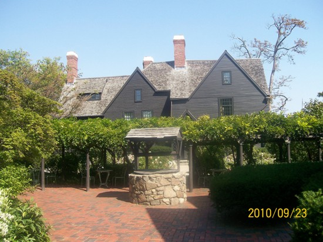
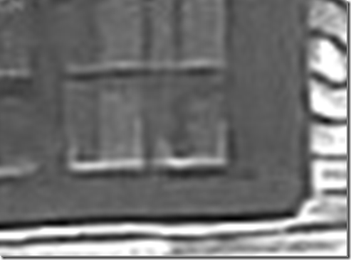
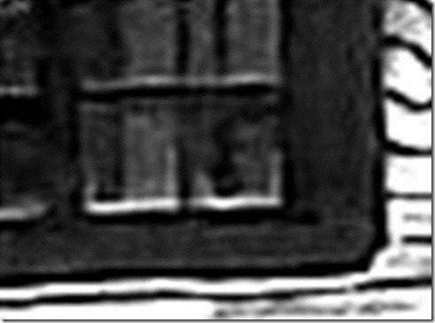
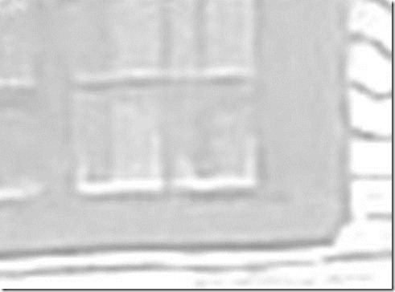

Salem, Massachusetts
Click on any of the titles in the option box below to view the photo:
The House of the Seven Gables is located at 54 Turner Street in Salem, Massachusetts. It is listed on the National Register of Historic Places.
The house is also known as the Turner-Ingersoll Mansion, named after the two families who lived there. It was built in 1668 by the Turner family, it is the oldest surviving 17th century wooden mansion in all of New England. After one of the Turner sons lost the family fortune, the Ingersoll family purchased it. Susan Ingersoll lived in the house until she was 72 years old - she was Nathaniel Hawthorne's cousin. He visited her often, and his experiences at the house inspired him to write the novel The House of the Seven Gables.
The House of the Seven Gables has the reputation of being haunted. Many people claim to see Susan Ingersoll's ghost roaming the hallways and peering out of the windows. There have also been reports of a ghostly boy haunting the attic area. He can be heard running around the attic, and playing with his toys. In addition to the apparitions seen, many visitors and employees also hear strange sounds - the toilets sometimes flush on their own, and the faucets turn on and off by themselves at times.
No photography (even without a flash) is permitted, so you'll just be able to see photos of the outside of the house here on my site. For more information about the mansion, please visit the official site: www.7gables.org.
In October 2005, I received the following e-mail from JR:
I was looking through the pictures of The House of the Seven Gables, and I found a picture of a figure in the window. I have attached it so you can see it. Let me know what you think. Could this be Susan Ingersoll's ghost? It's in the the last picture. I have attached a blow up of the area.
In September 2006, I received the following e-mail from Rod L. about his creepy experience at the house:
Last October 30th, my sister and I visited Salem. I'd never been there before (I'm 53 and live in Maine) and couldn't wait to drink in all that "witchy" ambiance. We saw the "Bewitched" statue in the park, then proceeded to walk the quaint streets--which were all decked out in Halloween finery. There were hundreds of people around, most in costume, and I realized--rather sadly--that Salem had become a very "touristy" town.
My sister, who's 5 years older, took me to many places, but the one I remember most vividly was the House of the Seven Gables. It was an overcast day and slightly chilly, and while we waited to enter, it actually began to snow quite heavily (this lasted for approximately 10 minutes, then stopped). We entered, were given the tour, and I was completely mesmerized.
But as we moved through the house, I suddenly became aware of a disquieting "presence" around me. I felt it at first when we went to a dining area, and it grew stronger once we went up a cramped brick-lined stairway into the attic. Later, after we stood outside, I mentioned to my sister that I felt odd--"displaced," if that makes sense. She laughed it off, and we went on our way.
Months passed. In the spring, she and I were chatting on the phone about Salem. I told her that something had happened to me in the House of the Seven Gables. When she asked "what," I responded that I couldn't quite put my finger on it--but the feeling had become stronger in the months since.
Now, almost a year has gone by, and those feelings have grown even stronger. Just today, a co-worker asked if anyone in the office had gone to Salem during Halloween. I told her my experiences, but as I spoke about the house, I began experiencing that odd "displacement" again. My conclusion? Something touched me when I was in that house--plugged into my subconscious somehow. I don't know what or who...but I've come to believe that a piece of "it" attached itself to me.
I know this all sounds ridiculous, but if I ever do visit Salem again, I definitely will steer clear of that house.
In October 2006, I received the following e-mail from Christopher B. about his creepy experience at the house:
While visiting Massachusetts this past week with my girlfriend, we spent a day in Salem at museums and going on tours of the old houses. By the time we got over to the House of the Seven Gables, it was 7:30 and the house was closed as it was already dark out. The janitor was taking out the garbage and locking up the doors to the visitor entrance, and all the lights in the house were off. I figured since we were there anyway we'd snap a few pictures of the house. My girlfriend had the camera and was standing by the side of the house on Turner Street, while I went down to the water. She ran up to me and told me she heard tapping on one of the windows, but couldn't see anybody. She was skeptical, but it still freaked her out. So I went up to the side of the house and looked in all the windows, hoping to hear or see something to no avail.
Well, the next day after going out whale watching from Gloucester, we decided to come back to Salem around 5:30 PM, before everything closed, to go to another museum and check out the house's tour. I didn't feel anything odd about the house, and never even heard any stories of it supposedly being haunted, so it was just like a normal old house tour to me. While getting to the bottom of the attic stairs to the 2nd floor, I heard a woman's voice RIGHT next to my ear whisper a "Shhh, Shhh" type of sound. I thought it was my girlfriend trying to spook me, so as I turned my head to say "knock it off", I saw she was still 3 to 4 feet behind me - still in the middle of the staircase.
In April 2007 I received an e-mail from Lynn C. about her trip to the house:
I am writing to let you know that on April 15, 2007 the Class of Heuvelton Central School Seniors (located in New York State) took their Senior trip to Boston. We visited many sites and the House of Seven Gables being one of them. I was a chaperone and Mother of one of the seniors.
A group of 12 or 14 seniors and chaperones were taken at a time (April 15) through the house on the tour. The group that I was with included the class advisor (art teacher). We were located in Susan Ingersoll's bedroom when suddenly (while we were being given the tour), 6 people (the teacher, a Mom who was chaperoning and 4 senior girls) heard a woman scream in a very high pitched voice. At the same time they heard the scream, they also felt a chill go around them as if someone had walked past them. I was standing approximately 4 feet behind them and didn't hear it. They all looked at me and said "Did you hear that?" Then one of the girls asked the guide if the house was haunted and she said "What do you yhink?"...so we never received an answer, but we all knew by instinct that it is.
I know that none of the seniors, myself, nor the teacher or Chaperones had previously read anything about the house before we went on the tour, so they weren't using their imagination from something they had read about the house. Everyone was asking each other what the House of the Seven Gables was - before we arrived for the tour. We were ashamed that we didn't remember from reading the book, if we had previously done so in school.
When our group reached the attic, I mentioned to one of the Moms (chaperones) that it felt "Creepy" in the attic. She agreed, and one of the Senior boys told me the same thing - that if felt "Creepy". I couldn't wait to leave...it was almost as if there was a presence in the room with us, and not a happy one. There was a small child's chair sitting next to one of the windows, and my eyes afixed themselves to that area of the room. I don't know why, but it was as if the presence was in that area...perhaps in the chair.
The history of the house was wonderful and I have been in many old houses for tours and have never felt numerous presences in a house like the House of the Seven Gables. The class advisor (Art Teacher) could not get over hearing the scream and feeling the cool breeze around her.
I thought I would go online and read to see if anyone else had ever had experiences such as ours, and I found your website. I was astonished by the responses from other people. It is the same experience we had.
In June 2007 I received an e-mail from Sarah about her visit:
I remember it so clearly. It was October of 2006 and my class had traveled from New Jersey to Salem. The day started off nice and sunny and then turned to rain. The reason we had come to Salem was because we had just finished reading the Crucible and our teachers thought it would be a great experience if we could visit Salem.
Throughout the day we had visited several different historic places. I loved it. In the early afternoon we decided to go to the House of the Seven Gables. We walked there in the rain (though it was actually fun). We passed the Custom House and I really wanted to go see it but we were on a tight schedule. We walked further and eventually we came to the House of the Seven Gables.
The house was amazing. We were all split into groups and each of us took turns going in for the tour. Finally it was my group's turn. We went from room to room and everything was perfect and made me feel like we were back in time. Soon we came to the bedroom with a picture of one of the women who used to live in the house (I think it was Susan's bedroom). I noticed that she looked exactly like one of my friends (it was soo weird, I wished that I could of taken a picture). While we were in the room I started feeling uncomfortable. I wasn't scared or anything...I was actually interested. I looked around the room at my friends and nothing seemed to be disturbing them so I just brushed the feeling off.
After we were finished in that room, we went up the very small brick stairway. The stairs were really freaky. I kept feeling like I was going to fall backwards. Soon we ended up in the attic. We stood there for about two minutes and then I started feeling uncomfortable again. The room didn't feel right. It felt more uncomfortable than the bedroom. It felt like someone was watching us from behind the wooden fence that we weren't supposed to cross. It felt as if someone was lying on the bed behind us. It was creepy.
I turned to my friend and asked her how she felt and she said "It's creepy here." My other friend looked at us and said "Yeah, I don't like it up here at all." While we listened to our tour guide, I kept looking back at the bed. I couldn't shake the feeling that we were being watched. I don't even remember half of what our tour guide said because I was to interested in the bed.
Once we exited the attic I felt the creepy feeling leave me. I'll never forget my experience there. If I ever go to Salem again (which I probably will) I definitely want to check out that house again.
In July 2007 I received an e-mail from JV about her visit to the house:
This experience occurred around the year of 1996. I can't quite recall the exact date considering it's been a while. I was visiting Salem for the first time after having a brief stay in Boston. We traveled from Boston to Salem by train early in the morning and had planned to make it a full day visit.
My husband, at the time, was from Boston so he was familiar with the town. He was briefing me on the attractions. We discussed the history of the place due to my knowledge with the Salem Witch trials from school and Nathaniel Hawthorne. We toured the town of Salem for most of the day with our son who was two and a half then, and I liked the town. It was quaint and I enjoyed being around so much history (even as sad as it was) and seeing the historical homes.
We left the visit to the House of Seven Gables for last since I really wanted to take my time to enjoy it. One of my favorite books was the Scarlet Letter, and it was exciting to visit a home that was connected to Nathaniel Hawthorne. As we began the tour I was instantly intrigued by the house, party because I had never been in a house this old and because of it's history. As interested as I was, I can't really recall every room we toured except the dining room, the kitchen, and of course the most memorable......the attic.
When I say memorable I don't mean happy or fun - it was more like eerie and sad. It really grabbed my attention, I remember being fixated on the beds. The stairs leading up to the attic for some reason also made a strong impression. I still remember being captivated. As we left we walked around the outside of the house, even then I could not stop looking at the house, especially a specific window. Again, being it's been a while, I can't recall what section of the house the window was on, but it was definitely the upper level.
By the way, I remember when the tour guide was telling the story of a lady who supposedly haunts the house, I was thinking how cute, "the tour guide is all dressed in attire from that era and he's telling ghost stories." Interesting, I thought, but I wasn't really buying it. I'm not a skeptic, but I just thought it was part of the whole act. I just wanted to point out that he tells of this supposed ghost in the dining room; one of the rooms that intrigued me.
After this visit to Salem, we were still in Boston. We were actually staying in my ex-sister-in-law's apartment. We started noticing that my son's toys were going off at night. I didn't pay too much mind to it because we figured there's always an explanation, although it had never happened before.
My then sister-in-law's husband would work late hours, and one night at around 3 AM he was in the living room, just watching TV and eating a snack. Well, to his left was one of my son's toys, and as usual it was going off. He proceeds to get up and physically turn it off. Thinking it wouldn't happen again, he was shocked to see the toy was still going off and making sounds.
We had another episode when we left Boston and went back to Florida. So now I'm away from all this, get back to my daily routines and typical life in Florida. Now this was my parents' house, which I had lived in for about 5 years before my brief stay in Boston, and I had never ever experienced anything there before.
One morning I was getting ready for work, and I have always gotten up extra early and then I would wake up my son. This particular morning I was in the bathroom combing my hair and I hear footsteps, like a child running and playing. I immediately assume it's my son, but of course I'm thinking this is very odd because he never wakes up this early. Nonetheless children are unpredictable.
Ok, then I'm thinking he made no vocal sound, and I've never seen or heard him wake up so cheery that he immediately wanted to run around and play. I proceed to look for him, and let me add this is on the second level so there's just bedrooms. I look around one of the bedrooms but no sign...then the next one still and my son is nowhere to be found. Finally thinking I'm going to find him in the third one, I'm shocked to find him sound asleep and with no chance of him ever being up.
There were numerous other experiences that began occurring, from the sounds of chairs being pulled and the refrigerator opening and the lights going off.
I've always thought that maybe some of the ghosts attached themselves to us because these things had never happened before. I'm not an expert on this and I would really like to ask someone who knows of this.
I will definitely never forget my visit to the House of Seven Gables.
In June 2008 I received an e-mail from Adam with an observation regarding one of the photos:
While analyzing this alleged ghost picture, I found even more interesting things in it. I thought I would share with you.
I used iphoto, and downloaded the photo to my computer and changed the exposure, contrast, saturation, brightness and sharpness. The window to the right of the door on the left of this picture is what you should look at. I clearly see a person wearing a flannel shirt and a large face directly behind it. I wasn't sure what the person claimed to see on the close-up, but when it's enlarged I see a row of what appears to be three heads. The bottom one is very human-like...it's scary. The face/head is facing our right side. Depending on how long you look at the zoomed part, you'll see several different things in the mist on the wall. Right off, I see a face in the middle and a person in a suit at the bottom. When you look at the picture before it's enlarged, there is a strange face on the bottom right hand corner. Tell me what you think and see.
I received an e-mail from Leah P. in October 2008, about her visit to the House of the Seven Gables:
I am so happy I found this web page. I just got home from a visit to Salem - It is October 18, 2008. I go to Salem every year to take in the festivities. I stay away from "evil" parts of Salem and just go for the fun and for the history. Last year I went with my husband, and we went to the House of Seven Gables. When we were to go up the narrow brick staircase, my husband had a very creepy feeling and was consumed with anxiety. He said he could not continue the tour, that he felt something very bad. I never felt anything. He felt sick and didn't feel better until we were off the property. Tonight, I went with some girlfriends (we are all in our 40's and 50's). I was so excited and couldn't wait to start the tour. When we entered the first room, I began feeling very hot. I whispered to my friend that I felt it was very hot in the room. She looked at me like I was nuts and said that she felt it was cold. We then moved to the dining room. The feeling of being hot started to increase, and I felt strange and displaced. As we started up the narrow brick staircase, a headache began to consume me. Then, we went into that attic bedroom where the child had been kept. I became inflamed in heat. I could barely breath and I became dizzy. My friend looked at me and said I had just turned white and asked what was wrong with me. I felt as though I would pass out and I was shaking all over. I felt an evil that I have never felt in my life. I felt as though my breath was being sucked out of me. The actress was doing her skit, but I couldn't take it anymore. I went to the tour person and told her I thought I was going to pass out and I needed to leave the house immediately. I was burning up! They escorted me out of the building. I had to sit for about a half hour outside to have the heat start to leave, but it wasn't until I was about a mile away that the feeling began to subside. My friends were disturbed by what had happened, and said it was like the house was not wanting me and forcing me out. I felt an evil that I will never forget, and I will never step foot into that house again. That house is possessed. Upon arriving home, I jumped on the internet and searched for a web site to see if anyone else has ever had an experience in that house.
I received an e-mail from Kenny S. in October 2009, about his visit to the House of the Seven Gables:
I visited the House on October 11, 2009. I was part of the 1:20 tour. Upon entering the house, all was fine. Seemed like just another old house. We were in, I believe, the dining room, were there is a very narrow staircase going up tucked away behind the fireplace. Upon beginning to go up the stairs all was fine, then as soon as I got to the top and walked in the attic room which was a small room, I began to feel...well, kind of weird. As if I was on a high mountian top where the oxygen becomes less. I felt sort of dizzy and off balance in all directions. I even commented to my wife that I felt kind of funny. This may be nothing, but it was strange that as soon as I left that room I was fine again. I'm not saying the the place is haunted, but there was something strange in that room I could not explain.
I received an e-mail from Mark G. in November 2009, about his visit to the House of the Seven Gables:
I visited the House of Seven Gables on November 11, did the 10:30 AM tour. I remember being quite impressed with the tour guide, who didn't try to play up the supernatural side of Salem's history, and I must confess I am not much of a subscriber to tales of the supernatural myself (I don't necessarily disbelieve, I just think it's all too convenient to spin some easy dollars from suckers who are eager to contact the "other side").
Anyway, I must confess I had a very similar experience in that attic to those of several others, judging from the website. I particularly noted Kenny S. recent experience and felt very similar...I am not prone to feelings of unease, however that attic made me very uncomfortable. It was claustrophobic, yes, but there was a definite feel of something "not quite right" about the place. I thoroughly enjoyed the tour, however I would not relish visiting the attic again. I am normally a very pragmatic person, however this place makes you feel quite uneasy, and I have no practical explanation for this.
I received an e-mail from Angie M. in April 2010 about her visit to the House of the Seven Gables:
I was not aware that the house was haunted, but one time my husband, daughter, and I went to do the tour there. When we were in the upstairs area (it may have been an attic) there were two rooms, and in between these two rooms there was a narrower hallway. As soon as I walked through the aisle or hallway, I instantaneously felt like I couldn't breath, and I felt that I was suffocating. I could not get out of that house fast enough.
After e-mailing you the first time, I was speaking to one of my cousins who lives in Salem, MA and was telling him of my experience at the house and of my e-mail to you. He said that he had heard that they actually hid slaves in the house, specifically in a space within the chimney, which is the space that I mentioned in my email (the narrow hallway between the two rooms.) Some of the slaves suffocated in that space. I have goosebumps just writing this to you. I have the creeps.
I received an e-mail from Megan C. in September 2010 about her visit to the House of the Seven Gables:
My experience seems very similar to others on your site. While touring the House of Seven Gables, everything started off fine. It was in the attic area where things changed. Suddenly I felt queasy and light headed and couldn't breathe. I had the feeling that I had to get out of the room NOW. I couldn't concentrate and felt incredibly anxious. The feeling I couldn't breathe subsided when we left the attic, but I remained feeling dizzy and anxious to get out of the house. The tour couldn't end fast enough after that. I had to sit outside on a bench for half an hour until I felt normal again. My husband thought I had low blood sugar or something physical going on with me, but I know there was an energy in the attic that was very threatening.
I received an e-mail from an anonymous website visitor in November 2010 about his visit to the House of the Seven Gables:
In September 2010 while vacationing in the Boston area, we stopped by Salem, not knowing whole lot about the community other than what was told in books and hearsay. I knew nothing about the house and sadly less about Nathan Hawthorne's writing, but I am an avid reader of more modern novels. After taking a tour inside the house with about 20 other tourists and leaving the building I snapped this photo. I thought it was postcard perfect. After a closer inspection you'll agree that what you see is not a girl but a old skeletal looking woman.
Look very close to the right window and particularly the lower right hand corner of the window on the dormer. Magnify it!
I am sensitive to that sort of stuff, and I felt a very strong presence inside the attic area. I remember doing a "double take" for no explained reason in the attic toward the little window facing the waterfront but nothing was there. The feeling was definitely there however.
If you have capabilities to enhance or magnify the photo and post that for that others can view for themselves by all means.
Follow my instructions magnify and see for yourself.
Looking over the photos we took this past summer I was surprised to see something I wasn't expecting and one in particular, "House of the Seven Gables" it does appear to be a young girls face in the window. I can see her hair. In the "House of the Seven Gables" photo I used the Microsoft photo viewer to magnify the images and what did I see? A face looking back at me!
If you look at the photo you will notice three chimneys - two are closer together, while the third is far left of the screen as you are looking at it. In between the chimneys on the roof you will notice a small dormer partially obscured with tree branches. Did you find it?
On that same dormer there is a window with no obstruction, and to the lower right hand corner magnify it and you will see what appears to be a teenage girl peering back out! No, the closer you magnify it the more it becomes apparent the it is an older woman complete with sunken eyes and hair!
Here are two photos of the same thing one with and one without sharpening...You decide for yourself!
First look at "House of the Seven Gables" photo #79 and see if you can locate it:
Next, look at "House of the Seven Gables" photo #79 A after I sharpened it and see if you make it out better:


I received an e-mail from Lisa in March 2011, telling me about a ghost photo that she took at the House of the Seven Gables. You can see it on this page:
The Ghost of the Seven Gables
I received an e-mail from Megan T. in April 2011 about her visit to the House of the Seven Gables:
I'm so glad I stumbled across this site! I was in 4th grade when I vacationed to Boston, MA. I was there with my grandparents and my aunt and uncle. We decided to take a day trip out to Salem. One of our stops in Salem was to The House of Seven Gables. I was only 9 years of age at the time, and had no idea what The House of Seven Gables was. I had an identical experience in the attic as many other's on your site. I was fine all through the tour, until the attic. I began feeling dizzy, almost as if I were on a boat, swaying back and forth through waves. I never thought much about it, I assumed it was because we had been walking around Salem all afternoon and maybe I was just tired and hungry. But, I only felt that way in the attic. It only recently became something I started to question.. It really left an impression on me. I'm 23 years old now, and to finally see that it wasn't an isolated incident is really creepy.
I received an e-mail from Pam M. in June 2011 about her visit to the House of the Seven Gables:
I just found your site and I, too, had an unpleasant experience in the attic of the house. Not a good feeling! There is definitely something not nice in the attic, as it tried to choke me and push my friend back down the stairs!
In April 2012 I received a follow-up e-mail from the anonymous visitor who contacted me in November 2010 about a visit to the House of the Seven Gables:
Back in November 2010, I sent you a little note about our experience while touring the House of Seven Gables. In my submission I wrote about snapping a photo outside and capturing a photo of a skeletal woman peering out of the attic window. I referred to it as my 79th photo, and I pasted a little from that email and your posting of my submission for your reference. Well, The photos I sent did not lend much justice to what I saw so, I thought I would go back and clip that portion of the window from my original photo and magnify it for you. Hopefully it shows up well and you can post it for others to see. Again, this was from the attic dormer window where folks have many of their experiences.
Look very close to the right window and particularly the lower right hand corner of the window on the dormer. Magnify it!
This is the same photo a little Darker. Look at the lower right hand corner panel.
Now, the same photo a little darker. Look at the lower right corner panel.
Again, same photo a lot brighter and less contrast. Look at the lower right corner panel.
Viewing the same photo from my camera enables to me to see this ghastly face in living color and it isn't pretty.
In January 2013 I received an e-mail from Courtney R. regarding the House of the Seven Gables:
I visited the house with my parents when I was about 10 or 12 years old (17 years ago). We visited in the evening and took a guided tour. When we went though the secret passageway to the attic I got a strange feeling. We were standing around listening to the tour guide explaining the history of that part of the house when I heard a very low deep growling sound, more like a moan. It was very loud and it seemed to be coming from the left part of the room next to the fireplace. My dad was standing next to me but he didn't seem to hear the sound, nor did anyone else in the room as far as I was aware. I know that I definitely heard the sound because it went on for a long time (20 seconds or so) and I could hear the sound over the voice of the tour guide telling the story. I couldn't wait to get out of the room. I was lightheaded and dizzy, but I wasnt particularly frightened of the experience (probably because I was living in an extremely haunted house at the time and I was used to having experiences). I returned to the house when I was about 20 years old on a trip with my friends, but unfortunately I didn't have any encounters or experiences. I did feel strange in the attic again but nothing happened. I was disappointed because I wanted to have an opportunity to justify my first experience.
Have you had any creepy experiences while visiting the house? If so, please send me an e-mail!
Where do you want to go? Select your destination: